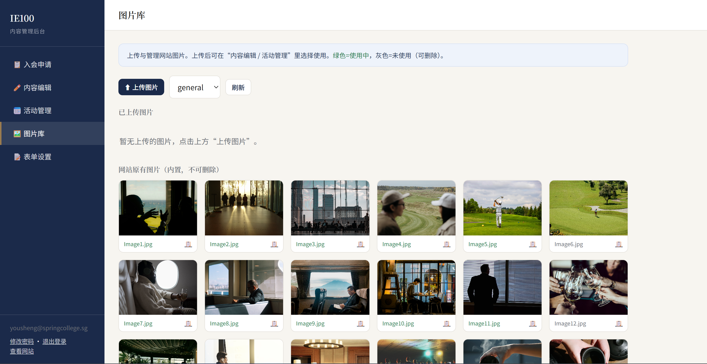

01Overview
One hundred Chinese entrepreneurs, invitation-only — a high-trust network anchored in Singapore.
The brief: signal belonging before a word is read — this audience knows instantly when something is built for them, not for scale. The network runs from Southeast Asia to North America, Europe and Australia — manufacturing, tech, finance, real estate — with Singapore the pivot it all turns on.
- Vision
- Connect Chinese entrepreneurs worldwide and redraw the map of value.
- Mission
- Singapore as the hub for a high-trust network where every connection creates real value.

02Design Approach
Visual language borrowed from private banking — not the startup world.
Prestige through restraint: near-black backgrounds carry the full-bleed photography and let the Chinese headlines read with weight.
- Bilingual by architecture
- Authored in Simplified Chinese, not translated — nav, CTAs and body all Chinese-first. The site doesn’t translate; it speaks.
- Photography as positioning
- Hotel lounges, boardrooms, rooftop gatherings — chosen for the club’s social texture: warm but selective.

国际企业家100俱乐部 · Brand System
连接全球华商，重塑价值版图
A visual language borrowed from private banking — deep navy carries the full-bleed photography, restrained gold marks the moments that matter, and an editorial serif lets the Chinese headlines read with weight.
Palette
Deep Navy#0E2438
Navy#16344F
Steel#3E6488
Gold#B79256
Cream#F7F6F2
Ink#1A1A1A
Typeface
IE100
Cormorant Garamond
Display
Display
华商
Noto Serif SC
中文标题
中文标题
Aa
Inter
Interface
Interface
高信任
仅限受邀
长期主义
价值共创
新加坡枢纽
03Website
The site runs the full member journey — first impression to application, each section in its own visual register.
- Homepage
- Two heroes — intimate and international.
- About & Philosophy
- Four values: value-first, co-creation, global vision, trust.
- Member Services
- Three pillars: business matching, succession, second-gen network.
- Events & Activities
- Annual forum, quarterly salons, site visits.
- Leadership & Membership
- Founding team, advisory council, application path.

Homepage — the international hero.



04Operations
A brand is only as good as the team that can run it without a developer.
So the site ships with its own content backend — a Chinese-language admin portal for a non-technical secretariat. Copy, events, photography and applications, all from one dashboard. No code, no agency on retainer.
- Membership inbox
- Applications post through Web3Forms — no server, no database. Each lands here with search, status tracking and one-click CSV export.
- Self-serve content
- Copy, events and an image library, editable in place — the network keeps its own site current long after handover.